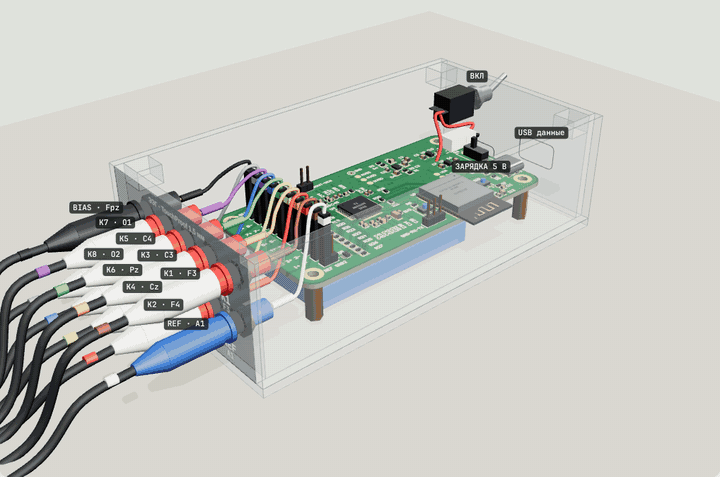
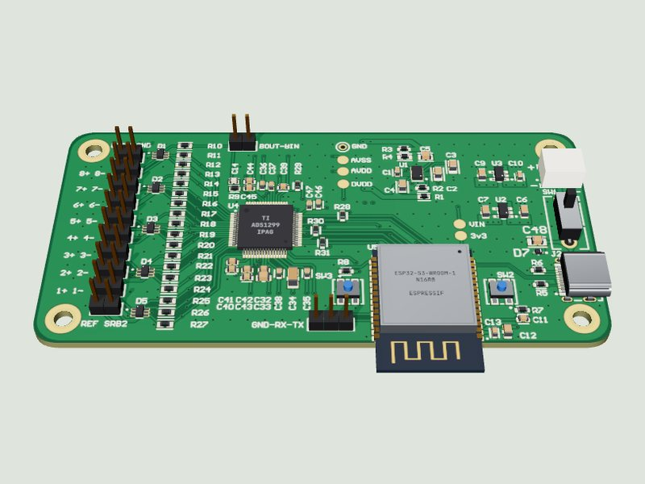
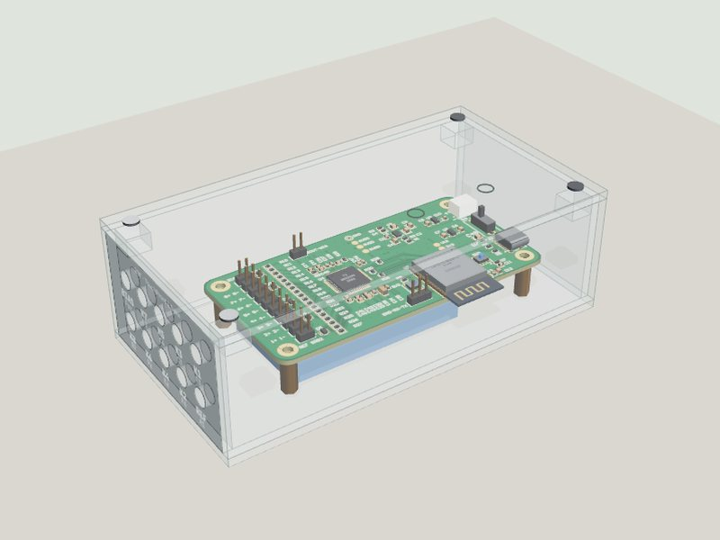
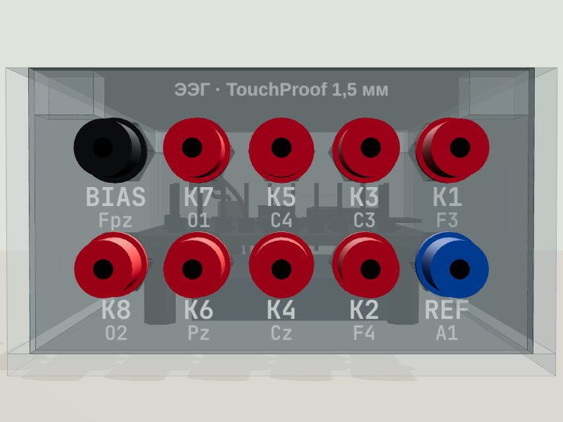
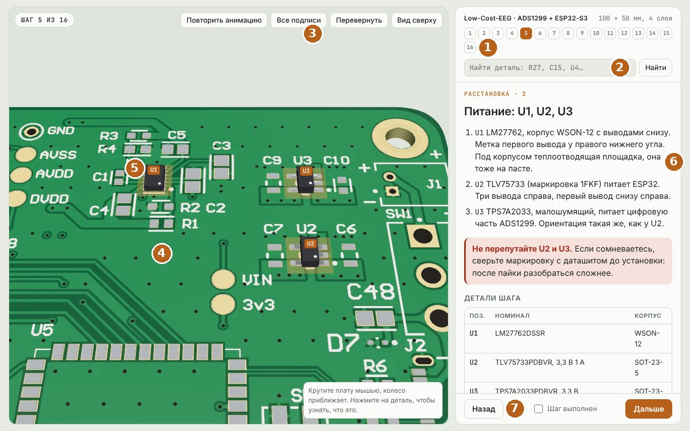

Плата ЭЭГ с Bluetooth, прозрачный корпус из оргстекла, панель для электродов и питание от аккумулятора. Каждый шаг показан на 3D-модели, которую можно крутить и разглядывать. Всё работает без интернета.

Итоговый прибор · нажмите, чтобы открыть 3DТри части, которые вы соберёте по инструкциям. Нажмите на картинку, чтобы открыть нужный шаг в 3D.



Все три инструкции устроены одинаково. Наведите на пункт справа, чтобы увидеть, где это на экране.

Номера шагов. Нажмите на любой, чтобы перейти. Выполненные шаги подсвечиваются.
Поиск детали. Введите R27, C15 или U4, и модель покажет, где она стоит.
Кнопки вида: повторить анимацию, все подписи, перевернуть плату, вид сверху. В инструкции по корпусу ещё крышка и прозрачность.
3D-сцена. Крутите левой кнопкой мыши, приближайте колесом, двигайте правой кнопкой. На телефоне одним и двумя пальцами.
Нажмите на деталь, чтобы увидеть её номинал, корпус и подсказку по установке.
Текст шага: что делать, предупреждения и таблица деталей этого шага.
«Шаг выполнен» запоминается в браузере, и прогресс виден на этой странице. Листать шаги можно клавишами ← →.
Шесть этапов сверху вниз. Раскройте этап, чтобы увидеть все его шаги. Нажмите на картинку шага, и инструкция откроется сразу на нём.
| Файл | Зачем |
|---|---|
| 01 Сборка платы (3D) | 16 шагов: паста, расстановка деталей, столик, нижняя сторона, выводные детали, отмывка. |
| 02 Проверка (3D) | 14 проверок от прозвонки до альфа-ритма, с примерами вывода и таблицами неисправностей. |
| 03 Чек-лист | Все шаги трёх частей на бумаге, 3 листа A4. |
| 04 Панель и корпус (3D) | 13 шагов: корпус, гнёзда, проводка к J3, аккумулятор с TP4056, зарядка, включение. |
| electrodes/ | Какие электроды выбрать: обзор, выбор MCScap, активные электроды. |
| hardware/ | Gerber и трафареты для Резонита и JLCPCB, перечень элементов, список покупок, схема автора. |
| enclosure/ | DXF раскроя, чертежи и шаблон сверловки 1:1 (печатать в масштабе 100 %), покупки для панели. |
| firmware/selftest/ | Прошивка самотеста ADS1299 и инструкция по прошивке. |
Плата: Low-Cost-EEG, автор Xavier Asghar, GPL v3. Инструкции, корпус, панель и самотест этого проекта распространяются на тех же условиях. Открывайте файлы в Chrome, Edge или Firefox. Прогресс хранится в браузере на этом компьютере.